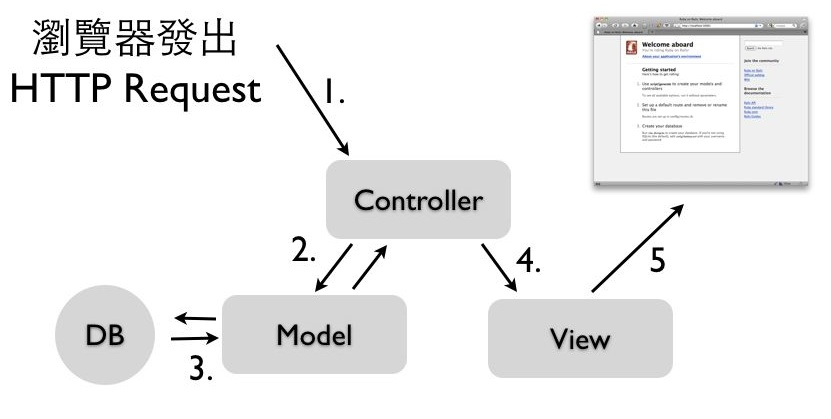

“Life’s too short to build something nobody wants” - Ash Maurya, Running Lean 作者
Ruby on Rails是一套非常有生产力、维护性高、容易部署的Web开发框架。从一开始不知名的玩具，到现在它已经成为全世界Web应用程式开发的首选框架之一。进入学习的旅程之前，我们先了解为什么它如此特别？
从1990年Tim Berners-Lee发明全球信息网之后，就开始有了动态网页的需求，早期最风行的方法是使用Perl CGI，会在Perl程式中，输出HTML内容，例如以下是一个简单的计数器：
#!/usr/bin/perl
open(FILE, "count.txt");
$num = <FILE>; $num++;
close (FILE);
open(WRITETO, ">count.txt");
print WRITETO "$num";
close (WRITETO);
print <<PRINTAREA;
content-type:text/html\n\n
<style>
<!--
body {background-color: black; line-height:1;
margin-top: 0cm;
margin-left: 0cm;
margin-right: 0cm}
-->
</style>
<body><center>
<b><font size=1 color=white>
$num</font></b>
PRINTAREA
读者可以发现，这样的方式在HTML内容佔多数的情况，显著十分不容易维护及阅读。大约在2000年左右，PHP、ASP等以样板(Template)为主的程式语言出现了，同时期搭配著关联式数据库如MySQL一起流行起来。这种写法与上述的Perl CGI恰巧相反，是在HTML样板中内嵌入程式和SQL指令，例如以下是一个PHP&MySQL程式，其中用<?php ... ?>括起来的部份，就是PHP程式：
<?php
$db = mysql_connect("localhost", "root", "password");
mysql_query("SET NAMES 'utf8'");
mysql_select_db($SERVER['db']);
?>
<html>
<?php
$sql="select * from news where Class='1' or Class='3' order by CTDate desc limit 0,5";
$result= mysql_query($sql);
while ( $arr=mysql_fetch_array($result) ) {
echo <<<NEWSEND
<div class="box">
<span class="box-title-1"> <b>【$arr[Title]】</b> $arr[CTDate] </span>
<div class="box-content">
$arr[Text]
</div>
</div>
NEWSEND;
}
?>
</html>
这种用法非常容易使用。特别像是讨论区、部落格(Blog)、内容管理系统(CMS)、Wiki这类系统，重点主要在资料的保存和显示，牵扯的复杂商业逻辑不多，特别适合这样的开发方式。程式只是数据库系统的糖衣介面，不需要MVC架构、不需要页面与程式逻辑分开、不需要对象导向技术，也可以开发的很好。
但是近年来随著Web 2.0和云端风潮带来越来越多的Web应用程式开发需求，网站软件的规模开始增加，需要加入更多的商业逻辑和功能，这样的开发方式，导致了整个专案的结构变得十分混杂，不利于团队合作开发。要接手维护这样的网站，常常会不知道如何阅读及修改起，因为所有的商务逻辑与HTML混杂在一起，不同人开发就有不同的程式架构，缺乏程式文件是常有的事情，也不容易进行测试。
于是我们有了Web开发框架的需求，引入完整的对象导向观念和技术。而所谓的框架就是制定好了一套规范和惯例，让开发者在该架构下来进行开发。
维基百科是这样定义的：「软件框架(Software framework)」是为了实现某个业界标準或完成特定基本任务的软件组件规范，也指为了实现某个软件组件规范时，提供规范所要求之基础功能的软件產品。框架的功能类似于基础设施，与具体的软件应用无关，但是提供并实现最为基础的软件架构和体系。软件开发者通常依据特定的框架实现更为复杂的商业运用和业务逻辑。这样的软件应用可以在支持同一种框架的软件系统中运行。
非常多的Web框架都实践一个叫做MVC的软件架构设计模式，将软件分成三个部分：

这张图示中的执行步骤是：
通过MVC模式，我们可以有系统的组织程式码，并且分离商业逻辑和使用者介面，让前端与后端开发者可以独立作业，也让程式码有著一致性的结构，档案位置清楚，这些惯例Web框架都帮你想好了。有了程式规范，也就比较容易维护开发了。
也有不实践MVC的小型Web框架，通常称做Micro-framework，例如Sinatra，我们会在Ruby锦囊妙计一章中简单介绍这个不同思维的Web开发框架。
桌面软件的MVC和Web MVC有一些差异，主要是因为Web MVC中的View没有办法通过Observer模式来进行更新。有兴趣的朋友可以参考Model View Controller: History, theory and usage这篇文章。
Web框架通常包括以下功能，
ORM(Object-relational mapping)可以用对象导向语法来操作关联式数据库，容易使用、撰码十分有效率，不需要撰写繁琐的SQL语法，也增加了程式码维护性。例如：
SELECT * FROM orders, users WHERE orders.user_id = users.id AND orders.status = "Paid" LIMIT 5 ORDER BY orders.created_at;
这一段SQL叙述，在Rails中的语法是：
Order.where(:status => "paid").includes(:user).limit(5).order("created_at")
不同于PHP直接使用档案目录结构来对应网址，例如网址是/foo/bar，就得有个档案在/foo/bar.php下。这种一对一的方式虽然直觉，但是却大大限制了程式架构和开发，网址也常常不漂亮，不利于SEO(Search engine optimization)。
使用Web框架则没有这种问题，你拥有最大的弹性，您可以指定任意URL对应到任一个Controller的动作，跟档案位置是无关的。
此外，Web框架也附带了非常多开发Web会用到的函式库，例如Template、Email、Session、快取、JavaScript/Ajax、测试等等。这也是为什么使用Web框架可以大大加速网站专案的开发时程，因为开发Web应用程式会用到的功能大部分都内建了，我们不需要重复开发轮子。
Ruby on Rails(官方简称为Rails，RoR非官方简称)是使用Ruby这套开放原始码(採用MIT授权)、对象导向程式语言所开发的Web开发框架，主要用于开发数据库网站应用程式。Rails是一套专业的开发框架，採用了MVC(Model-View-Control)模式、内建支持单元测试和整合测试、支持Ajax和RESTful介面、ORM机制，以及支持各种最新的业界标準像是HTML5、JQuery等等功能。它的发明人是David Heinemeier Hanson(DHH)，DHH是2004年将Rails从37signals商业產品中独立出来成为开源专案。
它的设计目标是只要开发者熟悉它的惯例，它就可以让网站开发变的非常容易。而相对于其他程式语言和框架，Rails可以让你用更少的程式码达成更多的功能，它甚至让网站开发变得更有趣。
Rails的哲学包括以下指导原则：
这是一个开发框架的时代，熟悉开发框架的人，可以很快的完成任务以及熟悉网站程式的架构。而各种程式语言要入门上手，其实都不会太困难。我认为重点会在于你不能够熟悉做事情的框架。
所以，撇开程式语言的偏好，Ruby on Rails是目前网站开发框架中做前端(提供动态HTML给浏览器)应用服务器最为成功和技术先进的。它的概念也深深影响了非常多其他程式语言的后进网站开发框架，例如ASP.NET MVC、CakePHP、Grails、TurboGears、Pylons、web2py、catalyst等等(模仿是最大的恭维)。我们可以用非常有效率的程式码开发出网站应用程式。另外，可能会让你感到意外的是，它也是目前动态语言中，生态圈最为丰富的网站开发框架，相关的书籍、研讨会、顾问公司、第三方服务、外掛套件等等十分丰富。因为使用Rails的人数眾多，所以在开发上各个方向都有人提供了最佳实务，像是如何写出好的程式码、网站安全性、网站性能、扩充性、全文搜寻、非同步处理等等，这是一个非常活跃的社群。
当然，最重要的一个理由，就是採用Rails后生产力暴增：写新的应用程式、增加新功能变成容易地多。让你可以用更少程式码做更多的事情，而且程式也更容易维护。当然，学习新工具总是需要时间投资的，一开始可能没办法立刻见效。但是如果你有长期的开发工作，而且网站有一定的复杂性，那么一个短期学习Ruby on Rails的投资，长期来说将会是非常值得的。
Rails是一套使用Ruby开发的网站框架。如果您对Ruby一无所知就一头栽进Rails，恐怕不是个好主意。
Ruby是一套开放原码、对象导向的动态直译式(interpreted)程式语言，它有著简单哲学、高生产力、精巧、自然的语法。他的创造者是来自日本的松本行弘(又名Matz)，设计的灵感来自于Lisp、Perl和Smalltalk，设计的目的是要让程式设计师能够快乐地写程式。
让我们看一个非常简单的范例：
str = "May Ruby be with you!"
5.times { puts str }
这的范例就简单告诉我们有关Ruby的三件事情了：
我们会在Ruby一章介绍基本的语法，让各位读者可以很快的入门。
为什么开发服务器端应用程式，使用动态语言(Ruby、Python、PHP、Perl等)比起静态语言(Java、C++等)有更好的优势呢？
静态语言和动态语言的差别在于，前者的变数型别需要事前宣告，后者则是执行期才动态决定。实务上，就看程式需不需要事前编译这个动作了。
著名的”人月神话”一书作者Fred Brooks曾说：「一个程式设计师一天能产生的程式码行数是差不多的，无论什么程式语言」。因此一个具有表达能力的高阶程式语言，就会比低阶的程式语言能完成更多功能。相较于静态程式语言，使用更高阶的动态脚本语言可以帮助我们：
不过，动态语言也不是没有缺点：
但是，我们知道现在的电脑越来越快、越来越便宜、上网越来越容易、内存越来越多、硬碟越来越大。另外，行动装置也越来越多，需要搭配的网络服务需求也增加了。这些趋势告诉我们有更多的软件的需求，另一方面由于硬件效能的增强，人力开发成本比起软件的执行期的效能，也越来越重要。同样一个程式，用动态语言执行的效能已经可以达到实用(例如每秒可以处理50~500个的HTTP请求，也可以通过增加服务器来扩展架构)，也许用静态语言后的执行速度可以再快一倍，但是却需要十倍以上的时间来开发，这件事情是不是值得呢？
在硬件资源有限的行动装置及嵌入式系统上，仍是静态语言的天下，这一点需要更多时间才有动态语言的生存空间。
没有编译期可以检查型别错误的问题，也随著单元测试和TDD(Test-driven development)测试驱动开发等敏捷最佳实务而逐渐降低重要性。而大部分的Bug会出自于商业逻辑错误，而不是型别错误上。
Ruby 是一套非常重视使用性(Usability)的对象导向程式语言，非常看重程式码的可读性及维护性。Matz在设计Ruby时，就特别考量一般人容不容易了解(他说我们都是凡人，像Lisp是给神人用的)。这也是为什么你常常会听到Ruby的程式码自然简洁又漂亮。您可以看看这份 Ruby创造者Matz的Why Ruby?投影片或是Matz的演讲:RubyConf 2008、RubyConf 2009、Mountain West Ruby Conference 2010，相信您会更了解及喜爱Ruby的哲学。
Ruby也是目前做Domain-specific language(DSL)，特别是Internal DSL最为成功的程式语言。通过DSL，程式不但可以拥有非常好的可读性，也可以大幅增加生产力。成功的DSL函式库例如有：Rake建构工具、RSpec测试工具、Chef服务器设定工具、Cucumber验收测试等。这些函式库正积极地影响我们对软件开发的想法。我们相信，还会有更多更有趣的DSL函式库出现。